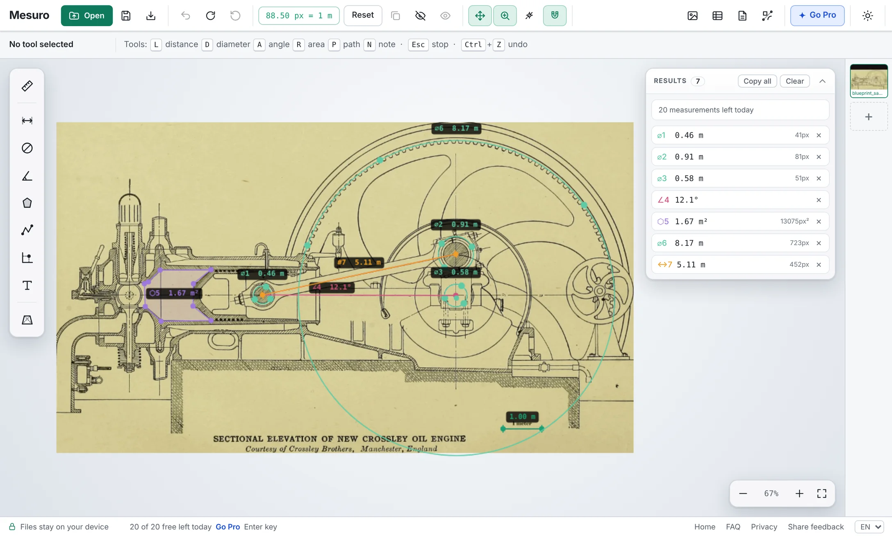
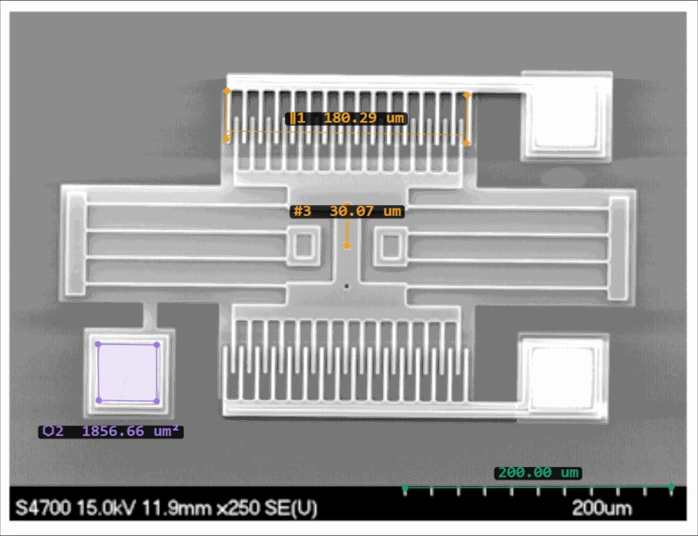
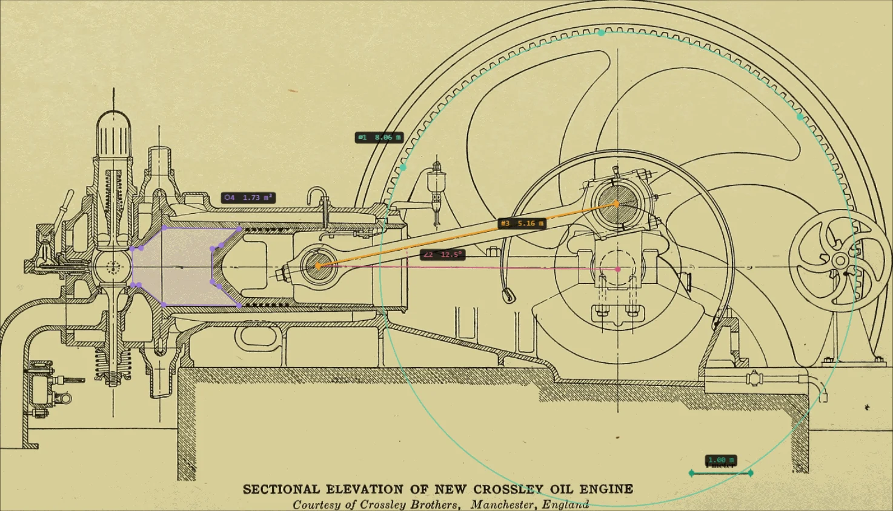
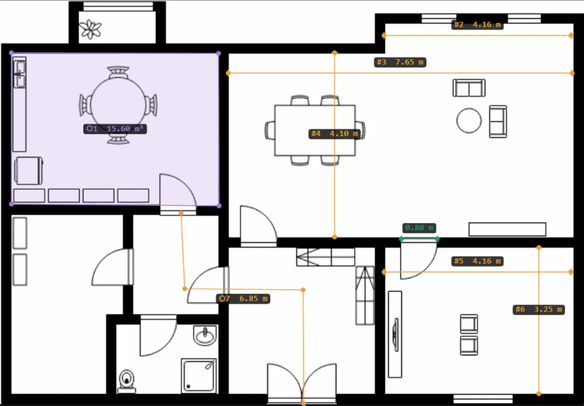

Measure real dimensions on any image or PDF
Set the scale from a length you know, then measure distances, angles, areas and diameters in real units. It all runs in your browser, so nothing is uploaded.
- Free for 20 measurements a day
- No account
- Files stay on your device

From file to measurement in four steps
Open a file
Photos, scans, screenshots or PDFs, one page or a whole document.
Set the scale
Draw over a scale bar, a printed dimension or a coin, and type its real length.
Measure
Results appear in real units and are listed as you go. Drag any point to adjust.
Export
Annotated image, PDF report, CSV, or DXF to continue in CAD.
The tools you need, nothing in the way
Every tool works on images and PDF pages, with a mouse, a trackpad or touch.
Scale calibration
Draw over any known length and type its value. Every result follows in real units.
Distance
Point to point, centre to edge, point to line and line to line.
Diameter and arcs
Centre and radius, three points on a circle, or arc length.
Angles
Three-point angles, or the angle between two separate lines.
Area
Straight or curved outlines, with the perimeter alongside.
Paths
Open or closed polylines for lengths that are not straight.
Point coordinates
X and Y positions from an origin you choose.
Perspective correction
Flatten a photographed surface from four corners before measuring.
Snapping
Snap to detected edges and to existing points for repeatable placement.
Where people use it

Microscopy analysis
Calibrate from the scale bar, then measure features across a batch.
See the workflow →
CAD drawing analysis
Check dimensions on exported drawings without opening CAD.
See the workflow →
Industrial applications
Verify laser engraving offsets and calibration points.
See the workflow →
Floor plan measurement
Room areas, wall lengths and openings from scaled plans.
See the workflow →
Photo measurement
Use a coin or card in the photo as the reference.
See the workflow →Your files never leave your device
Mesuro opens, measures and exports everything locally in your browser. Confidential drawings and photos stay where they are.
- Nothing is uploadedImages, PDFs and measurements are processed on your device.
- No account neededOpen the page and start. The free daily count uses an anonymous counter only.
- Desktop, tablet and phoneThe same tools on any modern browser, with touch gestures on mobile.
Questions
Are my files uploaded?
No. Files are opened and measured in your browser and never sent to a server.
How accurate is it?
As accurate as your reference and resolution. Use the longest known length you have and zoom in when placing points.
Can I measure PDFs?
Yes, single pages, page ranges or whole documents, with one scale applied across pages.
What does Pro add?
Unlimited measurements every day. Every tool and export is already included for free. See pricing.
Have a drawing to check?
Open it in Mesuro and get your first calibrated measurement in under a minute.